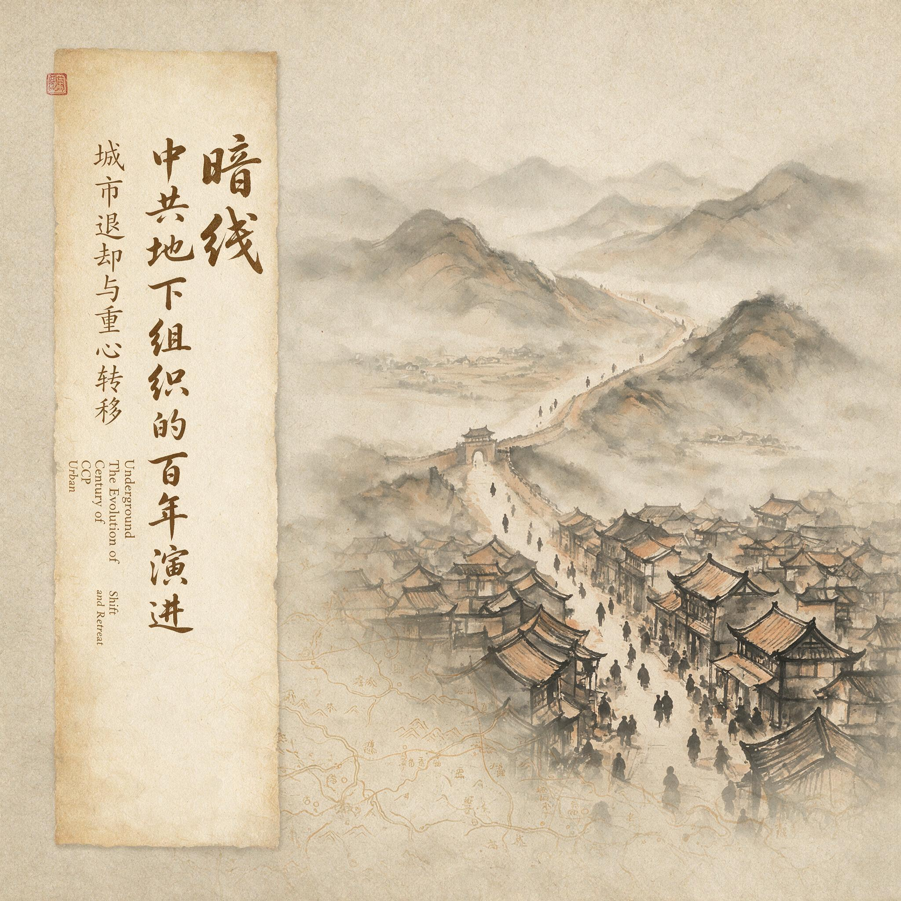

第 4 章
城市退却与重心转移
纸页很薄，折痕处已经透光。上面列着三十七个地址，分三栏，每栏十余行。每个地址后面跟着一个化名和一个数字——那是接头暗号中应答的间隔秒数。最末一行只注着六个字：“不得横向联络。”

城市退却与重心转移：历史出版插图
AI 生成插图，非史实影像。
没有抬头，没有落款，没有日期。在上海中央局交通科的残存文件中，这种格式的地址表反复出现。它们是单线联系从特科经验扩大为白区机关组织原则之后留下的纸面痕迹。三十七个地址连起来可以画成一张网，但网上的每个节点都不知道相邻节点是否存在。它们只对上级负责，只汇报自己经手的那一段。
这类地址表在1931年5月以前并不常见，此后却成为上海各机关日常运转的基本工具。这个变化并非一次会议或一份文件单独造成的。
它是在连续破坏的挤压下，组织逐步放弃城市暴动逻辑、退向保存性潜伏的副产品。1930年代初的上海，曾经是中共中央指挥全国城市暴动的神经中枢。1930年6月，李立三主持下的中央政治局通过决议，指示全国各大城市组织罢工、示威和武装暴动。上海是这套计划的中心舞台。
同年7月，上海党组织发动法商电车工人罢工，试图将其扩大为全市总罢工的导火索。罢工持续了近两个月，最终在资方分化、租界巡捕镇压和内部组织混乱中瓦解。
这次失败暴露了一个结构性缺陷：城市暴动的组织逻辑需要大规模动员和横向协调，而这意味着大量人员之间的信息互通——每一次集会、每一份传单、每一次联络，都在增加暴露面。暴露面的大小，取决于对手的侦测能力。
1930年代早中期，这个对手的能力正在急剧提升。国民党特务机关的体系化扩张，始于党务调查科的改组。1928年陈立夫出任国民党中央组织部部长后，将原隶属于组织部的党务调查科逐步升级为具备独立行动能力的政治警察机构。徐恩曾接手实际运作后，开始建立覆盖主要城市的侦查网络。
上海、南京、天津、武汉、北平均设有分支机构，每个机构配备无线电侦测设备、密码破译人员和分析档案的文职人员。党务调查科的工作方式与旧式警察不同：它不依赖街头巡逻和随机盘查，而是通过渗透、技术监控和叛徒情报来定位目标。1930年，受钱壮飞委托，胡底在南京丹凤街开设“民智通讯社”，对外打着国民党旗号行事，对内实为共产党的秘密交通站；当年年底，胡底又被派往天津开设“长江通讯社”，为共产党在天津打开工作局面。这些据点表面上是国民党宣传机构，实际上成为中共情报网络伸入敌方系统的触角。
技术监控的核心是无线电侦测。1929年冬，国民党在上海设立无线电管理局，专门负责监控租界内未经登记的电台信号。中共在上海的秘密电台多设在民居阁楼或商铺夹层中，功率小、天线隐蔽，但发报时仍会产生可被侦测的电磁信号。无线电管理局配备的测向设备可以在两个街区内锁定信号源大致方位，再由便衣人员逐户排查。1931年初，上海已有至少三处中共电台因无线电侦测暴露而遭到破坏。
这一手段的厉害之处不在于当场抓获发报者，而在于它迫使秘密电台不断转移、不断缩短发报时间、不断压缩通讯内容。每一次转移和缩短，都在降低信息通量。城市组织赖以指挥行动的神经传导速度随之减慢。
比技术监控更具威胁性的是叛徒情报的利用。党务调查科建立了一套叛变人员管理机制：每一个投降者不仅要供述自己所知的联络地址和人员信息，还要被编入转化人员名册，定期提供新的线索以换取自身安全。这套机制将叛变从一次性事件转化为持续性情报来源。
顾顺章1931年4月在武汉被捕后的供述之所以能产生如此巨大的破坏力，正是因为他的记忆范围覆盖了上海中央机关的核心节点。他不仅知道地址和化名，还知道人员的日常活动规律、备用联络方式和紧急转移程序。这些信息经过调查科的系统整理，形成了一份精确的打击清单。钱壮飞截获的几封加急电报，只是这份清单最先抵达的部分。
1931年4月，钱壮飞为营救中共在上海的组织而暴露身份，胡底与李克农等人被迫转移去中央苏区。
军统系统的前身——复兴社特务处——在1932年后逐步成形，其组织逻辑与党务调查科有所不同。复兴社特务处更侧重行动性破坏：跟踪、绑架、暗杀、策反。它不满足于通信侦听和档案分析，而是直接派人混入中共基层支部活动。在上海，复兴社系统曾有过这样的行动：策反一名基层人员后，并不立即逮捕其周围同志，而是让此人继续以原有身份参加支部活动，定期汇报，直至上下联络链被完全摸清后才统一收网。这种行动周期长达数月，渗透者甚至参与组织内部讨论，提供虚假建议，制造新的安全隐患。党务调查科和复兴社特务处之间并非没有竞争，有时甚至互相封锁情报、争抢破案功劳。
但在破坏中共城市组织这一目标上，两套系统形成了事实上的合力。前者负责从技术上锁定目标，后者负责从人力上深入组织。双重压力交织在一起，使得任何一次小的疏漏都可能被放大为系统性危机。
1932年至1934年间，上海中央局先后三次遭到大规模破坏，每次破坏的起点都是一名基层人员的被捕和叛变，随后沿联络链条向上追溯，最终波及指挥机关。破坏之后，不是没有重建，但重建的速度赶不上破坏的速度。每一次重建，新建立的联络点都比前一次更小、更分散、更少横向关联。中央局机关从原来的集中区域迁出，分散到法租界和公共租界的多处普通民居中。各机关之间的联系，由若干只知道单线任务的人分段完成。一张曾经覆盖全上海的网，正在变成几十条互不交叉的短链。
这个时期的破坏后果，不仅是人员损失，也是组织功能的被迫重置。1933年初，中共中央已撤离上海，迁入江西中央苏区。留守上海的中央局承担着白区工作的最高协调职能，但其任务性质发生了根本变化。
此前，上海是发动城市暴动的指挥中心，工人罢工、学生示威、士兵哗变是主要工作内容。此后，城市秘密工作的核心职能收缩为三项：交通联络、情报输送和干部转移。
交通联络维持着苏区与白区之间的信息流通。中央局交通科在1933年至1934年间维持了四条主要交通线：上海至汕头至潮州再转闽西苏区的南线，上海至天津至北平再转道陕北的北线，上海至汉口至鄂豫皖苏区的中线，以及上海经香港至广东东江根据地的海线。每条交通线由若干段接力组成，各段之间使用不同的交通员和接头暗号，前一段的交通员不知道后一段的目的地和人员。
这种分段隔离是单线联系原则在地理空间上的延展：不仅人与人之间要切断横向联络，地点与地点之间也要切断信息关联。交通员只知道这一段路，不知道上一段从哪里来，也不知道下一段由谁接。整条线的路线图只存在于极少数负责统筹的人手中。一旦统筹者被捕或叛变，全线虽不会同时暴露，但会陷入暂时瘫痪，因为没有人能说出完整的接力顺序。
1930年，受钱壮飞委托，胡底在南京丹凤街开设“民智通讯社”，明里为国民党服务，暗里作为共产党的联络据点；当年年底，胡底又被派往天津开设“长江通讯社”，为共产党在天津打开工作局面。这些据点表面上是国民党宣传机构，实际上成为中共情报网络伸入敌方系统的触角。
情报输送的工作重心，从城市内部转向敌方军政机构。潜伏在国民党机关中的情报人员不再以策动哗变或瓦解军心为首要目标，而是专注于获取军事情报——兵力部署、作战计划、后勤补给路线。这些情报通过交通线送往苏区，直接服务于反“围剿”作战。
1933年秋，从南昌方面陆续有关于国民党第五次“围剿”部署的军事情报送出，经南昌至上海至汕头最后转往瑞金，途中耗时十余天。速度比过去有所改善，但十余天对于一次大规模军事行动的预警来说仍然太长。许多情报送达时，其描述的部队位置和调度方案已经部分失效。红军参谋部门不得不在“已经过时的情报”和“完全没有情报”之间做判断。
这种时效困境说明：城市信息通道即使保持通畅，也无法完全满足武装斗争对即时性的要求。秘密工作的节奏与根据地作战的节奏之间存在不可消除的时差。
干部转移成为城市组织最频繁也最消耗资源的工作。苏区需要干部——军事干部、政工干部、无线电技术人员、医疗人员。这些干部多数来自城市，需要由白区组织安排护送。
从上海到瑞金，一名干部通常要经过四到五个中转站，每个中转站都需要安排住宿、证件和下一段交通。交通科的大半精力被消耗在护送任务上，用于其他工作的人力相应减少。有时一次护送失败，不仅损失干部本人，还可能连带暴露整条交通线。而苏区方面常常低估这种代价，只看到干部是否到达，看不到沿途付出的人力成本和风险成本。
单线联系原则在这一时期从特科的经验上升为整个白区机关的制度。1932年以后，中共临时中央向各白区省委发出一系列指示信，共同的要求是：机关缩小到最小限度，工作人员职业化，减少不必要的会议，禁止发生横向关系。这些指示没有统一使用“单线联系”这个术语，但其内容实质就是单线化的制度表述：每一个机关只与上级和下级各保持一条联络线，同层机关之间不通信息；每一名工作人员有公开的社会职业作为掩护，其秘密工作身份只对直接上级负责；会议规模不得超过三人，超过三人的信息传达改用书面或逐级口头转达。机关小型化是这一制度在空间上的体现。
上海中央局本身在1933年缩减到不足二十人，分驻在法租界和公共租界的七八处地点。每个地点只有两三人，各自负责一项专门工作——交通、情报、财务、印刷。各点之间由一名专职联络员传递信息。这名联络员不知道所传递文件的内容，只知道交接的时间和地点。
印刷科不再集中设置印刷厂，而是分散到三个小型油印点，每个点只印一份刊物的一部分版面，最后由交通员分别取走送往不同发行点拼合成整份。这意味着即使一个油印点暴露，敌方缴获的也只是半页残稿，无法从中获知刊物的全部内容和发行范围。代价是生产效率极低，一个环节延误，整期刊物就无法成卷。
干部职业化是同一制度在人员身上的落实。“职业化”在此有两层含义：一是每个秘密工作人员必须有一份合法的社会职业作为公开身份——教员、店员、记者、医生、小商贩；二是这份职业必须是真实的、可持续的，能够产生足够收入维持基本生活，而不依赖组织经费。
上海中央局的一份内部报告曾提到，经费短缺已严重到“有些同志每日只吃两餐稀饭”，要求各机关人员“必须切实自谋生计”。这份报告的语气不带抱怨，只是陈述一个事实：组织已经没有能力养活它的城市工作人员，城市工作人员必须像普通市民一样活下去，才能继续等待任务。
职业化看起来是对个人生存的安排，实际上也是对组织安全的安排。一个没有合法职业、整日在街面上游走的人，本身就是最显眼的目标。
减少横向集会是对行动方式的严格约束。此前，工人罢工和街头示威是城市工作的主要形式，这些活动天然需要人群聚集。1933年后，公开集会几乎从白区工作手段中消失。取而代之的是小规模秘密接头和单线传递的印刷品。
1933年的五一劳动节，上海没有发生任何公开示威。江苏省委事先只印发了少量传单，通过各支部的联络员分送到工人居住区，塞入门缝或放在工厂更衣室的角落。传单上没有集会号召，只有简短口号和一篇文章。这是退却之后的宣传方式：不追求声势，只维持存在感。
有一种常见的解释，把这一时期的存续归因于基层党员的信仰坚定和牺牲精神。信仰当然是真实的，但在1933年至1935年的上海，单靠热情已经不能解释组织为何没有完全消失。北平学生界的例子说明了另一面：有人出于政治热情组织了一个七八人的读书会，结果消息走漏，校方报告市党部，党务调查科介入，顺藤摸瓜找到了市委联络员，导致两个支部被迫解散。
在敌人的体系化侦测面前，自发的政治热情本身就是暴露源，不受制度控制的行动比没有行动更危险。真正让组织活下来的，不是狂热，而是反狂热的规则：缩小机关、切断横向、限制集会、以合法职业掩盖身份。这些规则抑制了党员的自主行动，也压制了组织的发展能力——但首先是生存能力。
这些变化加在一起，构成了组织功能的重置：城市地下工作不再以夺取城市为目标，而以维持城市存在为目标。“维持存在”意味着保留骨干、保留联络线、保留信息通道。这些要素本身成为目的，而不再只是实现武装暴动的手段。
由此产生了一个根本性的矛盾：城市的长期潜伏与根据地的公开动员需要完全不同的节奏。根据地的逻辑是扩大化。
苏区需要扩充红军，需要发动群众分配土地，需要召开群众大会宣传政策，需要建立公开的政权机构。这些工作天然要求扩大接触面、增加人员往来、公开组织身份。1933年秋，中央苏区开展大规模扩红运动，各县设立公开征兵站，村一级召开群众动员大会，积极分子当众报名参军。整个过程高度公开，组织身份不仅不需要隐瞒，反而需要亮出来。
白区的逻辑是隐蔽化。城市组织需要缩小接触面、限制人员往来、隐藏真实身份。任何扩大化的冲动都可能带来灭顶之灾。
1933年冬北平读书会的例子已经说明，仅仅一次小型自发的政治讨论，就足以让敌人找到切入整条联络链的口子。同样地，1934年春，上海中央局曾在一份内部报告中评估白区形势时写道：“敌人的白色恐怖日益加紧，我们的组织日益缩小，群众情绪低落，短期内难以恢复。”这份报告送达瑞金后，被批评为“右倾悲观”。
苏区的批评不是没有道理——从根据地的角度看，红军正在扩大，土地革命正在深入，革命形势总体向上。但这种批评忽略了城市与农村之间的信息不对称：在上海的同志每天面对的是巡捕房的搜捕和叛徒的指认，他们看到的不是红军的胜利战报，而是身边同志一个接一个消失。两种逻辑在同一组织体系内并行，不可避免地产生摩擦。
摩擦首先体现在资源分配上。苏区需要干部，白区输送干部；但每一次输送都意味着白区失去一名经过训练的人员，同时增加一次暴露风险。苏区发来的干部调令通常没有给白区机关留出充分的准备时间，也没有考虑被抽调人员的掩护身份是否允许其突然消失。一名在洋行任职的情报员如果突然辞职离开上海，不仅会引起雇主的注意，还可能牵连与他有过接触的其他地下人员。苏区不知道这些细节，白区无法拒绝这些命令。于是每一次干部输送都像从已经萎缩的组织肌体上再抽走一点组织液。
摩擦也体现在命令链条上。苏区作为政治指挥中心，向白区发出的指令有时基于对城市形势的滞后判断。
1934年春，苏区曾指示上海中央局在工人中组织反“围剿”群众运动。这个指示到达上海时，距离国民党第五次“围剿”开始已经过去数月，上海工人区的党组织在之前的破坏中损失严重，剩余人员正处于深度隐蔽状态。上海中央局回电表示执行困难，但最终仍组织了一次小规模传单散发作为回应。这次散发没有造成新的破坏，但也没有产生任何可测量的政治效果。它只是证明了白区仍然在服从指挥。指挥链条由此变成一种象征性的仪式：根据地证明白区仍由自己统辖，白区证明自己仍有行动能力。至于行动本身是否达到政治目的，反而成了次要问题。
更深层的摩擦在于政治判断的分歧。1934年1月，瑞金召开中华苏维埃第二次全国代表大会，大会报告中提到白区工作是“革命战争的重要一翼”，要求白区同志“用一切方法开展反帝反国民党的群众斗争”。同月，上海中央局的一份内部通信则写道：“目前工作以保存组织为第一要务，一切可能引起破坏的行动均应避免。”两份文件讲的是同一件事——白区工作——但给出的方向截然不同：一个要进攻，一个要防守。
把这种分歧简单归结为路线斗争或右倾投降，会掩盖真正的问题。城市和根据地面对的是两种完全不同的生存环境。根据地处于公开武装割据状态，它的生存依赖主动进攻和群众动员。白区处于秘密潜伏状态，它的生存依赖隐蔽收缩和减少活动。
两种理性各自合理，但无法调和。一个组织无法同时用两种节奏运行而互不干扰，尤其是当它的指挥中心设在根据地，而对城市形势的感知又总是滞后于城市的实际变化时，命令与执行之间的裂隙就会越来越宽。
1934年秋，随着第五次反“围剿”失利，中央红军开始长征。白区工作进入更深的低谷。上海中央局在1934年10月前后连续遭到破坏，负责人相继被捕。此后几个月内，上海残存的党组织几乎完全停止活动，只保留少数几条交通线维持与外界的最低限度联络。到了1935年春，有交通员在辗转报告中写道：“原联络点十不存一，旧人大多失散，新人不敢接头。”这类报告的字迹往往潦草，有时写在香烟盒内层的锡纸上——报告人没有条件找到像样的纸张。
城市退却至此完成最后一步：从进攻性暴动到保存性潜伏，再到几乎完全静默。这不是某一次决策造成的，也不是某一次破坏决定的。它是特务机关的体系化压力与组织自我收缩的逻辑共同作用的结果。单线联系制度保护了残余力量不被一网打尽，但也使这些力量失去了协同行动的能力。每一根链条都是孤立的，每一根链条都不知道其他链条的存在。
它们可以在静默中保存很久，但很难在静默中重新生长。当组织试图从低谷中恢复时，重建横向联系与保持安全隔离之间的根本矛盾就会重新浮出水面。在1935年的上海，这个问题以最朴素的方式存在着：一张三十七个地址的联络点清单，每一个点都要保持不动，但每一个点都不知道自己还能坚持多久。
1935年夏天，上海法租界霞飞路上一家不起眼的小书店照常开门营业。书店老板是一名三十岁出头的男子，戴着圆框眼镜，对顾客客气而疏离。
在这一退却过程中，交通线的功能转变最为直观。1930年夏，上海至汉口的交通线主要用于传递暴动指令。交通员携带的文件包括罢工号召、示威路线图和夺取警察局武器的行动计划。这些文件要求快速送达，交通员被要求在三天内完成单程。1931年春顾顺章叛变后，同一条交通线仍在运转，但携带的文件内容已截然不同：苏区发来的不再是暴动指令，而是要求上海方面安排无线电技术人员和医务人员的名单；上海发往苏区的不再是工人运动报告，而是国民党军队在沪宁线调动的情报摘要。1932年以后，这条线上传递的文件进一步收缩为两类：干部护送安排和军事情报。暴动指令彻底消失。
交通员的行进方式也随之改变。1930年的交通员往往携带大量文件，装在皮箱夹层或棉衣衬里中，一旦被捕，文件数量本身就足以证明其身份和任务性质。1933年的交通员只携带薄薄几页纸，有时甚至只靠口述记忆传递信息。文件量的减少不是偶然的，而是有意为之：减少携带物意味着减少被捕时的证据，也意味着减少被捕后敌人可以追溯的线索范围。
与交通线功能转变同步发生的，是城市集会活动的消失。1930年五一劳动节，上海党组织曾在南京路附近组织了一次飞行集会。一名青年工人突然在人群中高呼口号，随即散发传单，周围预先布置的十余名党员同时呼应，试图造成群众响应的声势。整个行动持续不到三分钟，参与者随即分散撤离。
这种飞行集会是1930年城市暴动逻辑的典型产物：它追求的是在敌人控制的核心地带制造政治声势，即使代价是参与者几乎必然暴露。1931年五一，飞行集会仍被尝试，但规模缩小，参与者更少，呼应更弱。1932年五一，江苏省委在内部讨论后决定取消公开集会，改为在各工厂门口秘密张贴标语。
1933年五一，连秘密张贴也被认为风险过高，改为仅通过个别联络员向可靠群众口头传达纪念意义。到了1934年五一，上海街头已看不到任何与中共相关的公开痕迹。一位当时在沪西工人区活动的地下党员后来回忆，那天他照常去工厂上班，午休时在食堂听到有工人低声说了句“今天是劳动节”，旁边的人只是点了点头，没有人接话。
这就是城市退却的微观景象：政治纪念日从街头缩进工厂食堂，从口号缩成点头。
撤离上海的过程本身也值得细看。1932年底至1933年初，中共中央领导人分批离开上海前往瑞金。撤离不是一次完成的，而是分多条路线、多个批次、在不同时间点进行。每一批撤离者都使用不同的化名、不同的证件、不同的交通线。有些人乘船到汕头再转道闽西，有些人先到香港再折回内地，有些人经天津绕道北方再南下。路线分散是为了避免一人被捕导致整批暴露。
但分散也意味着协调困难。有一批撤离者在汕头等待了十余天，因为前一站的交通员未能按时接头，而他们自己又不知道下一站的联系方式——按照单线原则，他们只知道这一站等谁，不知道下一站找谁。等待期间，他们住在一家小客栈里，白天不出门，夜间轮流值守，随时准备销毁随身文件。十余天后接头人终于出现时，其中两人已经因紧张和营养不良出现身体不适。这类细节不会出现在任何正式报告中，但它们构成了撤离的真实质地：不是有序的战略转移，而是高度紧张下的分批渗透，每一步都可能断裂，每一次等待都在消耗人的神经和组织的资源。
根据地与白区之间的节奏错位，在干部输送问题上表现得尤为尖锐。1933年秋，中央苏区发来一份调令，要求上海方面尽快输送一名有军事指挥经验的干部前往瑞金。这名干部当时在上海法商电车公司以职员身份为掩护，负责一个情报小组的运转。
他每个月收到一次从香港寄来的书籍目录，目录中夹着一张薄纸，纸上用米汤写着几行字，用碘酒擦拭后方可阅读。他读完后将纸烧掉，然后将信息口述给每隔一周来店里“买书”的一名年轻女子。女子离开后，信息会经过三次类似的传递，最终到达天津的一处商铺后院。整个过程没有人知道信息的原始来源和最终去向——每个人只知道上一个环节和下一个环节。
这家书店是1935年白区残存联络线的一个节点。它不发动罢工，不组织示威，不散发传单。它只是存在，传递信息，等待下一步指示。它代表了城市退却的最底线状态：不是战斗，不是发展，而是等待。
那家书店的老板在1936年初关闭了店铺，根据一条辗转送达的指示转移去了北方。临行前，他将书店里的书籍分装进几只木箱，寄存在一位可靠朋友家的阁楼上。木箱最底层压着一本用牛皮纸包裹的手抄册子，封面上没有书名，内页用工整小楷抄录了列宁的《怎么办？》全文——那是他在1930年入党时从一位已经牺牲的同志那里继承的。他把册子留在箱底，没有带走。
去北方的火车上他只带了一只小皮箱，箱里装着几件换洗衣物和一本商务印书馆出版的《英语文法》。那本手抄册子在阁楼上放了很久。它的主人此后再也没有回到上海。